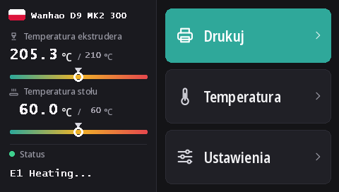

Wgrywanie firmware'u ekranu dotykowego Duplicatora 9
Każdy D9, od MK1 do MK3, ma ten sam ekran dotykowy DWIN T5 (480 × 272). Z tym firmware'em działa na nim DGUS Reloaded 2.0, nasz nowy interfejs w 16 językach, wgrywany z karty microSD.
Pobierz DWIN_SET.zip (DGUS Reloaded 2.0)
Co daje DGUS Reloaded 2.0
- 16 języków: English, Français, Deutsch, Español, Italiano, Português, Nederlands, Polski, Türkçe, Русский, العربية, हिन्दी, 中文, 日本語, 한국어, Bahasa Indonesia. Dotknij flagi obok nazwy drukarki na ekranie głównym, aby zmienić język; drukarka zapamiętuje wybór.
- Strona czujnika filamentu: Ustawienia → Filament → Czujnik filamentu. Zobacz Czujnik filamentu.
- Pasek stanu, który nie znika: ostatni komunikat, na przykład Ready, zostaje na ekranie, zamiast znikać po 30 sekundach.
- Wskaźniki temperatury dyszy i stołu z zaznaczoną temperaturą docelową.
- Nowy wygląd wszystkich stron: ciemny motyw, większe przyciski, piktogramy w okienkach.

1. Sformatuj kartę microSD
- Windows: Windows 11 często nie chce formatować w FAT32; użyj GUIFormat i ustaw rozmiar jednostki alokacji na 4096.
- Linux:
sudo mkfs.fat -F 32 -s 8 /dev/sdX1(najpierw sprawdź urządzenie poleceniemlsblk). - macOS:
sudo newfs_msdos -F 32 -c 8 /dev/diskN(sprawdź poleceniemdiskutil list).
2. Skopiuj pliki
Rozpakuj DWIN_SET.zip i skopiuj cały folder DWIN_SET do katalogu głównego karty.
3. Wgraj
- Wyłącz drukarkę i odłącz ją od prądu.
- Otwórz przód podstawy, aby dostać się do tyłu ekranu, gdzie jest jego gniazdo microSD.
- Włóż kartę i włącz drukarkę. Po 10–30 sekundach ekran pokaże aktualizację; poczekaj, aż uruchomi się ponownie normalnie, łącznie od 1 do 3 minut.
- Wyłącz drukarkę, wyjmij kartę, zamknij podstawę.
Film Wanhao o aktualizacji ekranu D9 pokazuje, gdzie jest gniazdo.
Skąd to się wzięło
DGUS Reloaded 2.0 to strona po stronie przerysowany DGUS Reloaded 1.0.3 (autorstwa Desuuuu, a potem Neo2003). Kod źródłowy, program generujący pliki ekranu i tłumaczenia są na GitHubie. Błędne lub niezręczne słowo w Twoim języku? Napisz nam na Discordzie albo zgłoś problem (issue) na GitHubie.
Aby wrócić do DGUS Reloaded 1.0.3, na przykład z firmware'em starszym niż v2.0.9, wgraj w ten sam sposób DWIN_SET_1.0.3.zip.
Powrót do ekranu Wanhao
Firmware ekranu Wanhao działa tylko z firmware'em płyty głównej Wanhao. MK1: plik ekranu w odpowiedniej wersji na stronie MK1. MK1 + zestaw, MK2 i MK3: DWIN_SET_MK2.zip. Procedura jest taka sama.